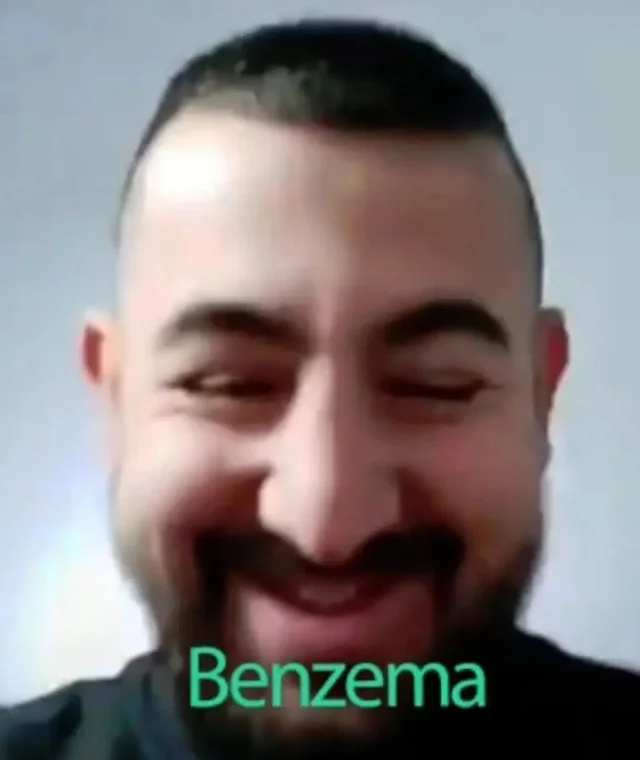
Una de las revelaciones de la temporada pasada sin duda entra en la historia de la Champions
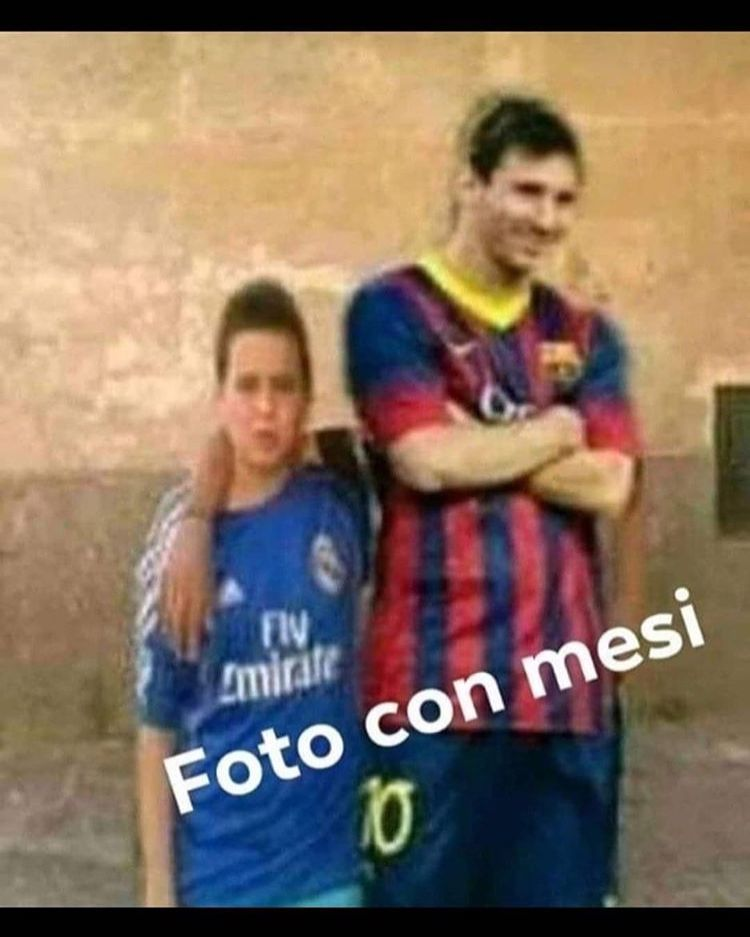
El Astro argentino se gano un puesto en la historia tras sus grandes temporadas con el Barca demostrando que es de los mejores de la historia
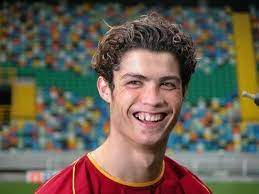
Cristiano Ronaldo el Bicho obligatorio en este 11 tras ser el segundo maximo goleador de esta competición
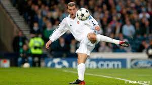
Zidane la definicion de clase en el medio campo protagonista de uno de los mejores golesw de la historia de la champions
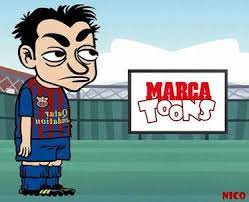
Xavi con el control absoluto del balón sin duda se merece este puesto gracias a su facilidad de mover el balón y movimiento de juego
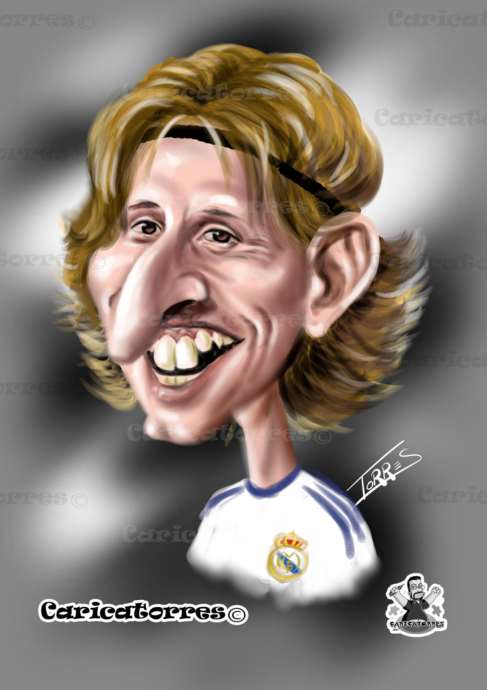
Modric con toda su clase y constancia era obligatorio derrocha clase el croata
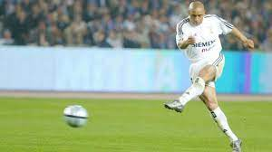
El lateral izquierdo por excelencia con sus potentes disparos y sus grandes intervenciones le colocan en un puesto en la historia
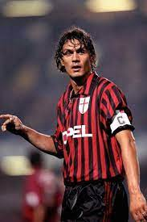
El central por excelencia simplemente una muralla el central italiano
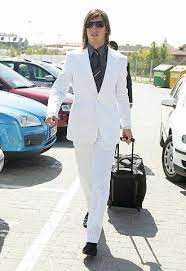
El central andaluz hizo historia en el madrid volviendose un defensa inpenetrable
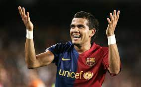
El lateral derecho brasileño tuvo unas grandes temporadas en el FC Barcelona ganadose este merecidisimo puesto
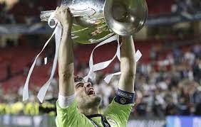
El santo se gano este puesto a pulso tras capitanear a uno de los mejores Real madrid de la historia